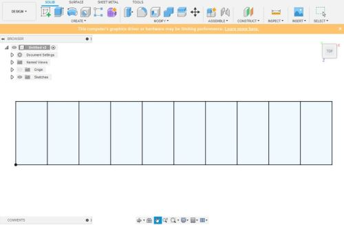
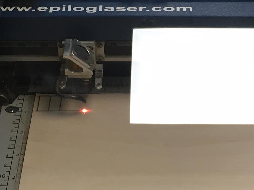
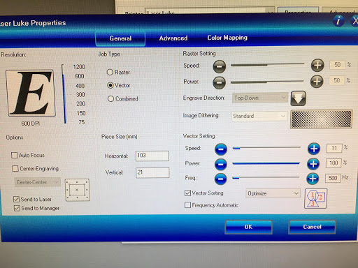
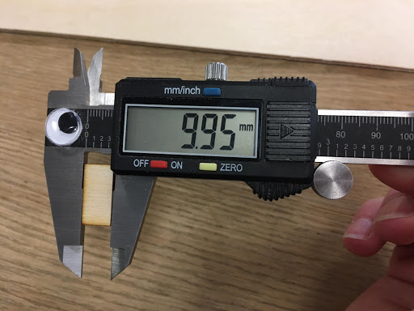
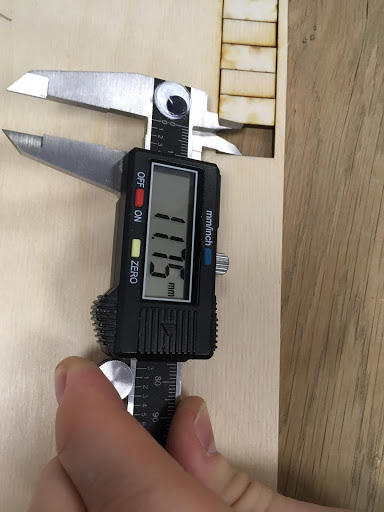

Hópaverkefni 1 - Kerf test
Hópmeðlimir
Birkir Jóhannes Ómarsson, Sigurður Rúnar Jóhannsson, Þorsteinn Jónsson
Verkefnalýsing
Veljið geislaskera og ákvarðið með prófunum kerf fyrir þann skera. Skjalfestið á sameiginlegri vefsíðu sem allir í hópnum geta hlekkjað á.
Undirbúningur
Áður en byrjað er að skera út með geislaskera er mikilvægt að vita hver breidd skurðarins (kerf) er, því þarf að framkvæma kerf test og mæla hvað það er mikið. Við byrjuðum á að teikna langan rétthyrning í fusion 360 sem er 2cm að hæð og 10cm að lengd og skiptum honum svo upp í línur með 1cm bili.
Svo exportuðum við dxf skrá frá Fusion yfir í InkScape. Við eyddum töluverðum tíma í að reyna fylgja þessu myndbandi https://www.youtube.com/watch?v=zN0jkUGdObw&feature=emb_logo og reyna svo að sameina mismunandi línur í Inkscape en það reyndist í rauninni óþarfi þar sem teikningin var frekar einföld. Næst exportuðum við Pdf skrá frá inkscape og fluttum yfir á usb lykil. Svo settum við kubbinn í tölvuna fyrir geislaskerann Luke. Geislaskerinn var stilltur á 600dpi, 11% hraða, 100% afl og 500 Hz. Við mundum að kveikja á loftpressunni svo ekki kviknaði í neinu.
 Niðurstöður
Skurðurinn tók um það bil 46 sekúndur og gekk mjög vel. Við tókum kubbana upp úr rammanum og snérum öðrum hverjum kubb á hvolf til að þeir gætu legið þéttar saman. Þetta gerist vegna þess að geislaskerinn sker ekki beint niður heldur mjókkar skurðurinn inn í einn brennipunkt sem vildi svo til að lenti við yfirborð plötunnar okkar. Því næst mældum við bilið sem myndaðist þegar einn kubbur var tekinn úr og hinum var þrýst upp að gagnstæðri brún. Þetta bil reyndist vera 11,75mm. Því næst mældum við breidd kubbsins sem var tekinn úr en hann var 9,95mm. Munurinn á þessum stærðum var jafn 11 kerf breiddum svo dæmið var einfalt: Kerf = (11,75 mm - 9,95 mm)/11 = 0,1636 mm
 